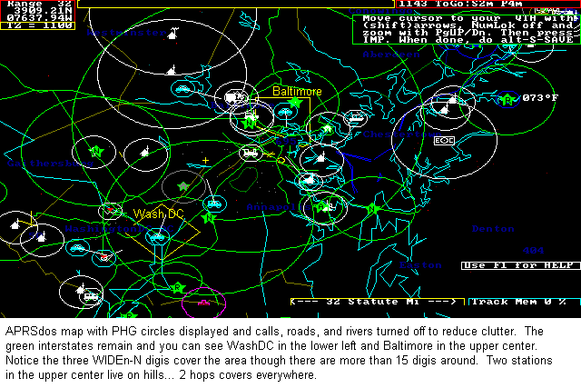
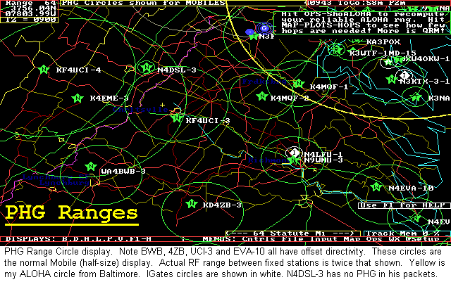
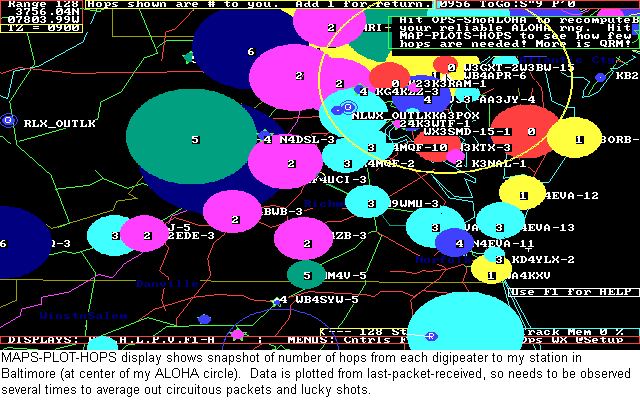
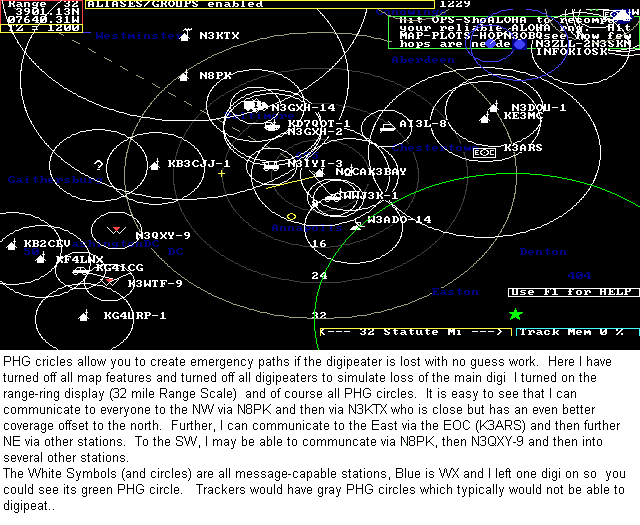

PHG circles are fundamental to the real-time tactical, in the field Ham Radio nature of APRS.
PHG CIRCLES: PHG stands for Power-Height-Gain (and directivity) which is all you need to calculate the relative RF range of a station. The most important parameter being Height Above Average Terrain. Because the FCC has a rigorous method of mathematically calculating, some poeople think that HAAT takes on some exact, almost mystical meaning. When in fact, it is just the simple Height of your antenna over the surrounding area that it serves. Notice that Height above sealevel means absolutely nothing. It is your heigh over everything around you that is important.

and PHG discussion for mobiles. Basically, Mobile range is half that of a fixed station.
DIGIPEATERS PHG: Of course the most important use of PHG is in visualizing what area is covered by different digipeaters. The below APRSdos map shows central VA with PHG circles turned on and Users turned off. Notice how all maps are displayed with the RANGE-SCALE shown in the upper left corner. This map is at the 64 mile range scale meaning that the view covers at least 64 miles in radius around my station. My station is off screen to the North East and only my yellow ALOHA circle is visible:

The default plot of all PHG Range circles is at the "half-size" scale which is much more appropriate for mobiles who have multipath, fading and other problems that shorten their usable range. Secondly, by displaying the range circles at half-size, it keeps the map from being too cluttered. So even though the circles between digis above do not overlap, they do probably have connectivity. The next map below shows the same map area, but with MAPS-PLOT-FIXED turned on so that the true estimated PHG circles for fixed paths are shown. Notice the overlaping coverage below.
HOPS DETERMINATION: The most practical use of PHG circles is determining a path to get from point A to pint B or in determining the number of hops that are needed to get to a given area. The MAPS-PLOT-HOPS command in APRSdos colors in the PHG range coverage for each digi and colors it proportional to the number of hops that that digi is away from you. Of course this is a one-time snapshot of the number of hops for the most receint packet heard from each digi, but by watching it over a while, it is easy to see what digis (and therefore areas) you can hit with N number of hops as shown below. This is the same map, but zoomed out to the 128 mile scale:

USER HOPS DISPLAY: The next map below shows the same HOPS display but for users and not digipeaters. This shows you the number of hops the last packet from that station took to get to you. Again, watching it over time gives you a good feel for the path to users. Unfortunately, many fixed stations these days use UIview which not only does not display PHG range data but also does not make it easy for users to transmit it either. Thus, most UIview stations are shown with a small 8 mile circle which is the default value for a 25W station with a 40 foot antenna and 3 dB omni.

PATHING WITHOUT DIGIPEATERS: Of course, when the digipeater in an area goes down is when PHG circles really have value in letting the user in the field quickly re-configure and use his neighbors for paths into certain areas. The map below zooms into the 32 mile range around my home station (NOCALL here) and turns off most map features to eliminate map clutter and shows how easy it is to dtermine workable paths by digipeating via neighbors:

PATH TRACING: Another very userful disply of PHG data is during a TRACE display. This not only shows the path that a packet took to get to you , but also the PHG range circles of each of the digis so you can see how the network is working. The use of non-tracing WIDEn-N paths for the last several users almost killed this capability, but under the New n-N Paradigm, now all paths will be tracable and so this is a very neat display for monitoring the performance of your network.

OMNI-DIRECTIONAL SIGNAL-STRENGTH FOX-HUNTING: Another very powerful capability which uses PHG data is the fox-hunting technique ussing signal strength contours from reporting stations who only report relative signal strength on the fox (or jammer). The reported signal strength is used to draw a colored circle which is inversly proportional to the PHG range of each station. Thus a STRONG report will show a small circle and a very weak signal will plot to the full size of the stations PHG circle but will be clored dark gray. A signal report of 0 (nothing heard) is also JUST AS VALUABLE because it can show all the area where the fox or jammer can not be. A NOT-HEARD report will draw a circle about 10% larger than the stations PHG circle and make it black. After receiving several signal strength reports, or entering voice reports on the map as objects, simply press MAP-PLOT-DF-OMNI to see the overlaping contours and the fox or signal source will be close to the intersection of the most overlapping circles as shown below:

See more details on APRS DFing techniques
PHG CIRCLES ARE HAM RADIO: To me, playing around with the maps and PHG data from everyone is most of what APRS on RF is all about. It gives you a window on the RF environment and a way to visualize who can see whom and what kind of station they have. Even the Kenwoods display PHG data. Some purists rightly claim that these circles are not perfect and cannot possibly represent the actual range of each station, but that was never their intent. Their intent was to be a relative indication of the approximate range of a station so that hill-top stations would cleary stand out over low stations with marginal antennas. Combined with the offset feature to allow for directivity or for obstructions and local terrain, the PHG feature of APRS can be made to quite realistically represent the usable range of most stations. PHG data is a fundamental part of the APRS protocol and should be included in all fixed station packets and displayed in all programs.
de WB4APR, Bob
See SITEMAP of other related web pages
You are visitor number:
Since 1 Oct 2003..
The Naval Academy is a registered user of APRS and WinAPRS. The purpose of this web page is to show details and to elaborate on the protocol and its applications and should not be considered as an advertisement or an endorsement of any commercial product.